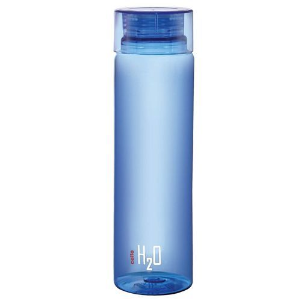
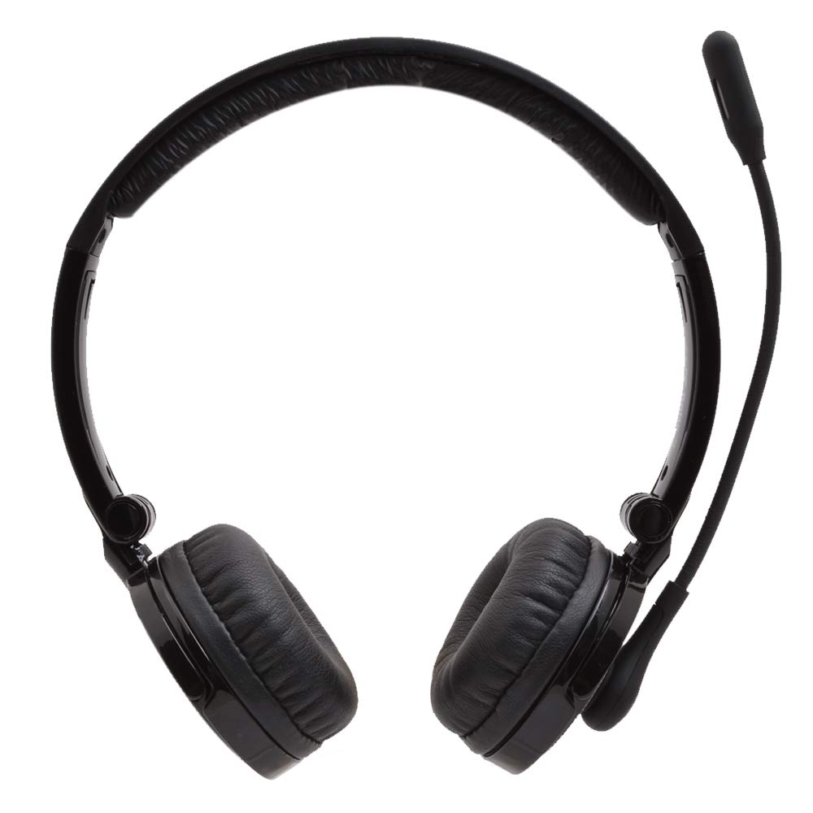

Case Study
- Text Image - 
Output on Microsoft Azure - Undefined
Output on Mobilenet Model - Water Bottle
Result -
Mobilenet Model is more accurate
Text Image - 
Output on Microsoft Azure - A close up of a cable
Output on Mobilenet Model - Microphone , Mike
Result -
Mobilenet Model is more accurate
Text Image -

Output on Microsoft Azure - A close up of electronics
Output on Mobilenet Model - Remote Control, Remote
Result -
Microsoft Azure is more accurate
Text Image -

Output on Microsoft Azure - A close up of a plant
Output on Mobilenet Model - Pineapple
Result -
Microsoft Azure is more accurate
Text Image -